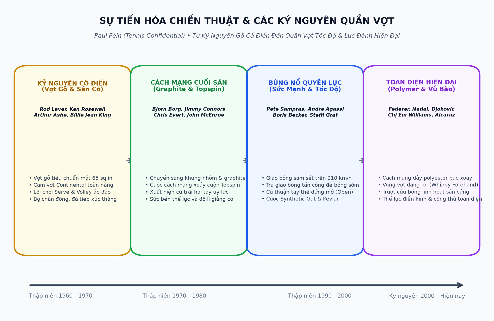
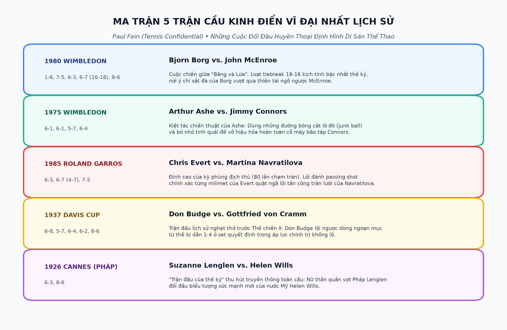

PHẦN 1: CHÂN DUNG HUYỀN THOẠI & BẢN LĨNH NHÀ VÔ ĐỊCH
— Paul Fein (Tennis Confidential)
Lời Người Dịch: Giải Mã Bản Lĩnh & Góc Khuất Quần Vợt Đỉnh Cao
Nhà báo thể thao kỳ cựu Paul Fein — cây bút từng đoạt vô số giải thưởng của Hiệp hội Nhà văn Thể thao Mỹ và là thành viên danh dự của Liên đoàn Quần vợt Quốc tế — đã dành trọn đời mình để quan sát, phỏng vấn và mổ xẻ thế giới quần vợt chuyên nghiệp. Cuốn sách Tennis Confidential: Today's Greatest Players, Matches, and Controversies được ví như một 'hồ sơ tuyệt mật' phơi bày mọi khía cạnh trần trụi và lộng lẫy nhất của môn thể thao quý tộc này.
Tác phẩm không chỉ kể lại những chiến tích hiển hách trên bảng vàng danh dự, mà còn đào sâu vào tâm lý học phức tạp của các siêu sao: từ những giọt nước mắt cô độc trong phòng thay đồ, mối quan hệ đầy sóng gió với các bậc phụ huynh kiêm huấn luyện viên độc đoán, cho đến cuộc chiến sinh tử giữa bản ngã và khát vọng bất tử trong lịch sử thể thao.

Chương 1: Chị Em Nhà Williams - Lọ Lem Ghetto & Kỷ Nguyên Sức Mạnh
Câu chuyện về Venus và Serena Williams bước ra từ những sân tập đầy ổ gà và tiếng súng đạn tại khu ổ chuột Compton, California để bước lên đỉnh cao thế giới là một trong những bản hùng ca vĩ đại nhất của lịch sử thể thao hiện đại.
Paul Fein phân tích cách mà người cha Richard Williams đã xây dựng một bản kế hoạch chi tiết dài bảy mươi tám trang ngay từ trước khi hai cô con gái chào đời. Khác với những đứa trẻ nhà nòi được nuông chiều trong các học viện danh giá ở Florida, chị em nhà Williams mang lên sân đấu một nguồn năng lượng hoang dã, sự tự tin sắt đá và một nền tảng thể lực điền kinh chưa từng có trong lịch sử quần vợt nữ:
- Cú giao bóng xé toạc không gian: Venus và Serena đã nâng tốc độ giao bóng của nữ giới lên ngang ngửa với các tay vợt nam hàng đầu (vượt mốc hai trăm kilômét một giờ), biến quả giao bóng thành vũ khí kết liễu điểm số trực tiếp.
- Lối đánh tấn công mở (Open Stance Aggression): Thay vì bước chân vào sân theo lối cổ điển, họ sử dụng thế đứng mở hoàn toàn để xoay hông cực mạnh, tung ra những quả thuận tay sấm sét từ mọi góc sân.
- Ý chí chiến đấu bất khuất: Bản lĩnh được tôi luyện từ nghịch cảnh nghèo khó giúp họ không bao giờ nao núng khi bị dẫn điểm hay đối mặt với những định kiến chủng tộc nghiệt ngã.
Chương 2: Andre Agassi - Tàu Lượn Cảm Xúc & Sự Tái Sinh Kỳ Diệu
Không có sự nghiệp của một vận động viên nào chứa đựng nhiều thăng trầm, nghịch lý và kịch tính như Andre Agassi. Từ một cậu bé nổi loạn với mái tóc nhuộm highlight, chiếc quần jean bò rách rưới và khẩu hiệu nổi tiếng 'Hình ảnh là tất cả' (Image is everything), Agassi từng rơi xuống vực thẳm vị trí một trăm bốn mươi mốt thế giới vào năm 1997 do chán nản và khủng hoảng hôn nhân.
Thế nhưng, sự tái sinh của Agassi ở tuổi gần ba mươi để giành trọn bộ Career Grand Slam là bài học mẫu mực về sự trưởng thành tâm lý. Paul Fein vạch rõ bí mật chuyên môn đã giúp Agassi thống trị mặt sân cuối sân:
- Phản xạ trả giao bóng nhanh nhất hành tinh: Đứng sát bên trong vạch cuối sân để đón đầu quả giao bóng của đối thủ ngay khi bóng vừa nảy lên (on the rise), cướp đi toàn bộ thời gian chuẩn bị của người đối diện.
- Kỹ năng điều bóng như máy đo đạc: Không cần vung vợt quá mạnh, Agassi điều phối đối thủ chạy mệt nhoài từ góc này sang góc kia bằng những đường bóng bám sát vạch vôi với độ chính xác đến từng centimet.
- Sự biến chuyển nội tâm: Từ việc chơi quần vợt vì sự áp đặt của người cha sang việc chơi bằng lòng biết ơn và sứ mệnh truyền cảm hứng cho cộng đồng.
Chương 3: Pete Sampras - Đỉnh Cao Cô Đơn & Nghệ Thuật Giao Bóng Lạnh Lùng
Nếu Agassi là ngọn lửa cuồng nhiệt thì Pete Sampras chính là khối băng vĩnh cửu. Trái ngược với lối sống ồn ào của truyền thông, Sampras chỉ quan tâm đến một điều duy nhất: chiếc cúp vô địch Grand Slam.
Paul Fein ca ngợi cú giao bóng của 'Pistol Pete' là quả giao bóng hoàn hảo nhất từng được tạo ra trong lịch sử quần vợt:
- Động tác tung bóng độc nhất vô nhị (Disguised Toss): Sampras tung bóng ở cùng một vị trí chính xác cho mọi loại giao bóng: dù là giao bóng phẳng nổ tia chớp vào góc chữ T, chém xoáy mang bóng ra ngoài biên hay giao bóng xoáy nảy ngược qua đầu đối thủ. Người trả giao bóng hoàn toàn mù tịt về hướng bóng cho đến khi vợt tiếp xúc bóng.
- Cú đập smash nhảy lơ lửng (The Slam Dunk): Khả năng bật cao như một vận động viên bóng rổ NBA để đập nát những quả lốp bóng phòng thủ của đối phương.
- Tâm lý thi đấu lạnh như tiền: Khả năng tung ra quả ace thứ hai ở điểm break-point mà không hề run sợ trước bất kỳ áp lực nào.
PHẦN 2: XU HƯỚNG NÓNG BỎNG & CUỘC CÁCH MẠNG QUẦN VỢT
— Paul Fein (Tennis Confidential)
Chương 5: Vai Trò Của Các Ông Bố HLV - Vinh Quang & Ám Ảnh (Pushy Parents)
Hiện tượng những người cha kiêm huấn luyện viên độc đoán (The Tennis Fathers) là một chủ đề gây tranh cãi gay gắt và dai dẳng nhất trong làng banh nỉ thế giới. Paul Fein đã dành nhiều năm điều tra để đưa ra một cái nhìn toàn diện và sâu sắc về góc khuất đầy nhức nhối này.
Lịch sử quần vợt ghi nhận vô số trường hợp những ông bố đầy tham vọng đã biến con cái mình thành những cỗ máy thi đấu ngay từ thuở ấu thơ:
- Mike Agassi: Người cha gốc Iran đã tự chế ra cỗ máy bắn bóng có biệt danh 'Con Rồng' (The Dragon), ép cậu bé Andre phải đánh hai ngàn quả bóng mỗi ngày với niềm tin tuyệt đối rằng 'nếu con đánh một triệu quả bóng một năm, con sẽ trở thành số một thế giới'.
- Jim Capriati: Người cha đã đẩy cô con gái Jennifer Capriati vào vòng xoáy chuyên nghiệp từ năm mười ba tuổi, để rồi chứng kiến cô bé sụp đổ trong trầm cảm, bị bắt vì ăn cắp vặt và nghiện ngập trước khi tìm lại chính mình.
- Damir Dokic và Peter Graf: Những tấm gương bi kịch về sự kiểm soát bạo lực, cuồng vọng tiền bạc và những hành vi hung hãn trên khán đài, gây chấn động dư luận quốc tế.
Tuy nhiên, Paul Fein cũng công bằng chỉ ra rằng: nếu không có sự hy sinh tột cùng, ý chí sắt đá và niềm tin mãnh liệt của những người cha như Richard Williams hay Toni Nadal, thế giới đã không thể có những tượng đài thể thao vĩ đại. Ranh giới giữa sự tận tụy bảo bọc và sự áp đặt hủy hoại tâm lý là vô cùng mong manh.
Chương 6: Từ Môn Thể Thao Quý Tộc Sang Đấu Trường Khốc Liệt
Khởi nguồn từ những bãi cỏ xanh mướt của giới quý tộc Anh quốc vào thời Nữ hoàng Victoria, quần vợt từng là một trò tiêu khiển nhã nhặn, nơi các quý ông mặc quần dài trắng và các quý bà diện váy phồng uống trà giao lưu. Tinh thần hiệp sĩ (chivalry), sự lịch thiệp và tính phong nhã từng được coi trọng hơn cả tỷ số trận đấu.
Thế nhưng, bước vào kỷ nguyên Open Era (từ năm 1968) và sự bùng nổ của truyền hình cáp toàn cầu, quần vợt đã lột xác hoàn toàn để trở thành một đấu trường thể thao khốc liệt bậc nhất hành tinh:
- Tốc độ và sức mạnh thể lực điền kinh: Các tay vợt ngày nay không khác gì những vận động viên chạy nước rút phối hợp với đấu sĩ quyền anh. Các trận đấu kéo dài năm set trong điều kiện nhiệt độ bốn mươi độ C đòi hỏi một thể lực phi thường.
- Áp lực tài chính và thương mại hóa: Tiền thưởng hàng triệu đô la cùng các hợp đồng tài trợ khổng lồ đã biến mỗi điểm số thành một thương vụ kinh tế cân não, làm biến mất tính ngây thơ lãng mạn của quá khứ.
- Sự suy tàn của phong cách Serve & Volley: Sự biến mất dần của lối đánh giao bóng lên lưới hoa mỹ trước bức tường phòng thủ kiên cố của các tay vợt cuối sân hiện đại.
Chương 7: Cuộc Cách Mạng Vợt & Khí Động Học Dây Cước (The Gear Revolution)
Paul Fein phân tích chi tiết sự tiến hóa công nghệ đã làm thay đổi vĩnh viễn bộ mặt của môn thể thao này. Trong suốt một thế kỷ, cây vợt gỗ với mặt vợt nhỏ bé sáu mươi lăm inch vuông đã giới hạn tốc độ vung tay và độ xoáy của bóng.
PHẦN 3: HUẤN LUYỆN ĐỈNH CAO, CHIẾN THUẬT & TRẬN ĐỊA GRAND SLAM
— Paul Fein (Tennis Confidential)
Chương 8: Nghệ Thuật Huấn Luyện Đỉnh Cao (Elite Coaching Insights)
Đằng sau ánh hào quang của mỗi nhà vô địch Grand Slam luôn có bóng dáng của những bộ óc chiến thuật lỗi lạc. Paul Fein đã có cơ hội tiếp cận và đàm đạo với những huấn luyện viên danh tiếng nhất thế giới để đúc kết những bài học xương máu về nghệ thuật huấn luyện:
- Nick Bollettieri: Người sáng lập học viện quần vợt nội trú đầu tiên trên thế giới tại Bradenton, Florida. Triết lý của Nick là sự kỷ luật quân đội, biến các cú đánh thuận tay và giao bóng thành những đòn tấn công hủy diệt không khoan nhượng. Ông đã đào tạo nên mười tay vợt số một thế giới, bao gồm Agassi, Courier, Sampras, Seles và Sharapova.
- Brad Gilbert và triết lý 'Thắng Xấu Xí' (Winning Ugly): Brad Gilbert đã chứng minh rằng bạn không cần phải thi đấu đẹp mắt như một bức tranh nghệ thuật để trở thành nhà vô địch. Bằng việc phân tích tỉ mỉ điểm yếu của đối thủ và kiên quyết kéo đối thủ vào vũng lầy chiến thuật khó chịu nhất, Gilbert đã đưa Agassi trở lại đỉnh cao thế giới.
- Paul Annacone và Toni Nadal: Sự điềm tĩnh mẫu mực của Annacone giúp Pete Sampras và Roger Federer duy trì sự tập trung tối thượng, trong khi sự nghiêm khắc và khiêm nhường tuyệt đối của Chú Toni đã nhào nặn nên một chiến binh đất nện Rafael Nadal với ý chí quật cường vô song.
Chương 9: Cú Thuận Tay Hiện Đại & Những Độc Chiêu Huyền Thoại
Quần vợt hiện đại được định hình bởi sự thống trị của cú đánh thuận tay (forehand). Đây là vũ khí ghi điểm chủ lực, cho phép các tay vợt kiểm soát toàn bộ không gian sân đấu.
Paul Fein phân tích những bước đột phá mang tính cách mạng của cú đánh thuận tay:
- Cú Forehand Inside-Out Của Jim Courier: Thay vì đánh bóng sang bên phải, Courier né người sang góc trái để tung ra cú thuận tay chéo sân cực nặng nhắm vào điểm yếu trái tay của đối phương. Đòn đánh này đã mở ra trào lưu né trái đánh phải thống trị quần vợt suốt ba thập kỷ qua.
- Độ Xoáy Cuộn Đất Nện Của Gustavo Kuerten: Với kiểu cầm vợt Western cực đoan và cánh tay dài thanh mảnh, 'Guga' Kuerten tạo ra những đường bóng lượn cong kỳ ảo rơi cắm sâu vào vạch cuối sân đất nện Roland Garros, khiến các chuyên gia đương thời phải kinh ngạc.
- Cú Smash Nhảy Lơ Lửng (Slam Dunk) Của Pete Sampras: Tận dụng sức bật cơ bắp và khả năng định vị không gian để đập bóng từ trên không, triệt tiêu hoàn toàn cơ hội thở dốc của đối thủ.
Chương 10: Bốn Thánh Địa Grand Slam & Khắc Nghiệt Mặt Sân
Không có môn thể thao nào mà sự thay đổi của mặt sân lại làm biến đổi bản chất của cuộc đấu một cách toàn diện như quần vợt. Để chạm tay vào cúp vô địch Grand Slam, một tay vợt phải là bậc thầy của sự thích nghi:
| Giải Grand Slam | Mặt Sân Đặc Trưng | Thách Thức Khắc Nghiệt Nhất | Phẩm Chất Quyết Định Thành Bại |
|---|---|---|---|
| Australian Open | Sân cứng Plexicushion | Cái nóng thiêu đốt lên tới bốn mươi lăm độ C tại Melbourne | Sức bền thể lực chịu nhiệt và khả năng phục hồi thần tốc |
| Roland Garros | Bụi đất nện nung đỏ (Clay) | Bóng bay chậm, nảy cao và các pha giằng co ba mươi lần chạm vợt | Tính kiên nhẫn sắt đá, độ xoáy topspin cực đại và đôi chân trượt điêu luyện |
| Wimbledon | Cỏ tự nhiên truyền thống (Grass) | Bóng trơn trượt nảy thấp, tốc độ chớp nhoáng và độ trượt thất thường | Cú giao bóng sắc lẹm, hạ trọng tâm cực thấp và phản xạ lưới nhạy bén |
| US Open | Sân cứng DecoTurf rực lửa | Ánh đèn đêm rực sáng, gió lộng Flushing Meadows và tiếng ồn náo nhiệt | Bản lĩnh sân khấu lớn, lối chơi bão táp và khả năng chịu đựng áp lực dư luận |
PHẦN 4: MƯỜI TRẬN CẦU KINH ĐIỂN VĨ ĐẠI NHẤT LỊCH SỬ
— Paul Fein (Tennis Confidential)
Chương 11: Băng & Lửa - Borg vs. McEnroe (Chung Kết Wimbledon 1980)
Trận chung kết đơn nam Wimbledon năm 1980 giữa ông hoàng người Thụy Điển Bjorn Borg và chàng trai ngỗ ngược thành New York John McEnroe được toàn thể giới chuyên môn đồng thuận tôn vinh là trận cầu kịch tính và tráng lệ bậc nhất thế kỷ hai mươi.
Đó là cuộc đụng độ đỉnh cao giữa hai thái cực nhân cách và hai triết lý thi đấu đối lập hoàn toàn:
- Bjorn Borg (Khối Băng Vĩnh Cửu): Điềm tĩnh tuyệt đối, nhịp tim nghỉ ngơi ở mức ba mươi lăm nhịp một phút, không bao giờ để lộ bất kỳ cảm xúc vui buồn nào trên khuôn mặt, thi đấu kiên nhẫn từ cuối sân với những cú bóng xoáy cuộn topspin nặng trĩu.
- John McEnroe (Ngọn Lửa Rực Cháy): Bốc đồng, thiên tài, đầy giận dữ và nghệ sĩ, sẵn sàng tranh cãi nảy lửa với trọng tài và liên tục tràn lên lưới bằng những cú volley chạm bóng tinh tế đến mức ma thuật.
Đỉnh điểm của tấn bi kịch diễn ra trong loạt tiebreak của set thứ tư. Trong suốt hai mươi phút nghẹt thở với ba mươi tư điểm số giằng co, McEnroe đã cứu sống liên tiếp năm match-point của Borg để giành chiến thắng trong loạt tiebreak với tỷ số mười tám - mười sáu (18-16).
Bất kỳ tay vợt bình thường nào cũng sẽ suy sụp hoàn toàn sau khi bỏ lỡ năm cơ hội nâng cúp vô địch như vậy. Thế nhưng, bản lĩnh phi thường của Borg đã bừng sáng ở set thứ năm quyết định. Ông thắng mười chín điểm liên tiếp trong các game giao bóng của mình và kết thúc trận đấu sau ba giờ năm mươi lăm phút với tỷ số 1-6, 7-5, 6-3, 6-7, 8-6 để lần thứ năm liên tiếp nâng cao chiếc cúp mạ vàng danh giá.

Chương 12: Đòn Mưu Lược Của Arthur Ashe Quật Ngã Jimmy Connors (1975)
Trận chung kết Wimbledon năm 1975 là một trong những bất ngờ chiến thuật lớn nhất mọi thời đại. Jimmy Connors khi đó là một cỗ máy chiến thắng bất khả chiến bại, đương kim vô địch đang ở phong độ đỉnh cao với những cú vung vợt đại bác hủy diệt đối thủ. Trong khi đó, Arthur Ashe đã ba mươi mốt tuổi và bị đánh giá ở cửa dưới hoàn toàn.
Nhưng Ashe cùng người bạn chiến lược Dennis Ralston đã vạch ra một kế hoạch tác chiến vô tiền khoáng hậu: tuyệt đối không cung cấp lực đánh cho Connors:
- Chiến thuật bóng lờ đờ (Junk Balling): Thay vì đọ lực với Connors, Ashe chỉ tung ra những quả bóng cắt xoáy chìm nhẹ hều lơ lửng vào giữa sân, buộc Connors phải tự thân vận động tạo lực đánh từ vị trí thấp dưới đầu gối.
- Những cú lốp bóng và bỏ nhỏ hiểm hóc: Phá vỡ hoàn toàn nhịp điệu quen thuộc của Connors, biến cỗ máy bão táp thành một đấu sĩ mất phương hướng liên tục tự đánh hỏng.
- Giao bóng góc rộng thông minh: Đẩy Connors ra xa khỏi sân để mở toang góc dứt điểm dễ dàng tại lưới.
Chiến thắng 6-1, 6-1, 5-7, 6-4 của Arthur Ashe không chỉ đưa ông trở thành tay vợt da màu đầu tiên vô địch Wimbledon mà còn là minh chứng hùng hồn cho chân lý: trí tuệ mưu lược luôn có thể đánh bại sức mạnh cơ bắp thuần túy.
Chương 13: Đại Kình Địch Lịch Sử - Chris Evert vs. Martina Navratilova (1985)
Với tám mươi lần đối đầu trực tiếp trong suốt mười sáu năm ròng rã, cuộc so tài giữa Chris Evert và Martina Navratilova là kỳ phùng địch thủ vĩ đại nhất trong toàn bộ lịch sử thể thao nhân loại.
Trận chung kết Roland Garros năm 1985 trên mặt sân đất nện Paris là đỉnh cao chói lọi của cuộc thư hùng này. Navratilova khi đó đã thắng Evert trong cả ba trận chung kết Grand Slam gần nhất và đang thống trị thế giới bằng lối chơi tràn lưới vũ bão.
Thế nhưng, Chris Evert — bằng sự kiên định lạnh lùng của một 'Băng Công Chúa' — đã thực hiện những cú passing shot dọc dây và chéo sân chính xác đến từng milimet, bẻ gãy mọi nỗ lực lên lưới của Navratilova để giành chiến thắng nghẹt thở 6-3, 6-7, 7-5. Sau cú đánh dứt điểm cuối cùng, cả hai huyền thoại đã ôm chầm lấy nhau trong nước mắt, để lại một hình ảnh tuyệt đẹp về tình bạn cao thượng và sự tôn trọng vượt lên trên mọi danh hiệu.